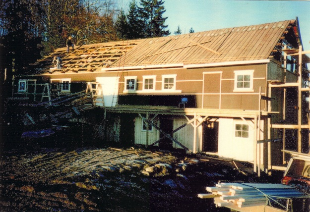
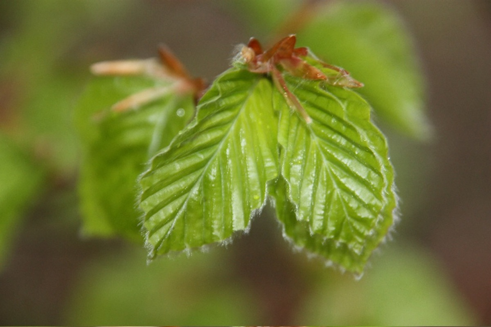

Aarholt-tunet Gjestegård i Stokke i Vestfold - et sted i utvikling.

På 1500-tallet bodde Halvor Aarholt (f.1520) her på gården. Nåværende eiere er 13. generasjon på samme gården. Det gamle "svart/hvitt bilde" viser bygningene på slutten av 1800-tallet. Bryggerhuset til venstre, låven til høyre og i forkant ei "Kjone" tørkehuset som ble brukt når korn, malt og lin skulle tørkes. Kjonen ble gjerne laftet i to etasjer med ildsted i underetasjen og tørkerom over.
Alle slektledd har vært jord- og skogbrukere. De fleste hadde tilleggs-arbeid utenfor gården - for å skaffe penger. Mat hadde de på gården, men penger var det mindre av. Så det at bønder har hatt tilleggsnæringer ser ut til å ha vært både vanlig og nødvendig i alle tider.
{kind=link}
{kind=link}
I 1987 overtok Svein Aarholt og kona Ingfrid Weydahl den gamle slektsgården etter hans foreldre; Hans Kristian og Lillian Aarholt. Bildet over til venstre er fra den gang. Stedet var da et "flott opp-pussingsprosjekt" siden familien ikke hadde bodd her siden Hilda og Einar Aarholt (Sveins besteforeldre) drev gården fram til slutten av 50-tallet da de ble pensjonister.
{kind=link}

Svein og Ingfrid flyttet til gården i 1987. Da begynte de å ta ned og flytte fire tømmerhus til gården, i tillegg til å restaurere gårdens egne tre tømmerhus: Våningsbygning, Bryggerhus (bildene over sett fra gårdsplassen) og Stabburet på tunet. Etter 4 år begynte de å ta imot de første gjestene. Det var barn på bondegårdsferie sommeren 1991 - et prosjekt gjennom Fylkeslandbrukskontoret og 4H.

{kind=link}
{kind=link}
{kind=link}
{kind=link}
Låven begynte Ingfrid og Svein å sette istand våren 1994. Og de fire bildene over er fra 1994, 1995, 2004 og 2010. Litt av en forskjell. Låven ble ferdig restaurert innvending i 2008 og to år etterpå ble solfangertaket montert.
{kind=link}

I høyløa i låven (over til venstre) ønsket Svein å lage et amfi. Siden det skulle lages grunnmur kunne en like gjerne kjøre gravemaskinen inn i bygget. Det ferdige amfiet (til høyre) er fra samme vinkel etter at en har gravd seg to meter ned. Døra inn til fjøset - midt på bildet til venstre, dekkes av et teppe på bildet til høyre.
Flere bilder av de ferdige resultatene innvendig - i forskjellige hus, kan sees på egen billedside under menyen: Voksne/kurs og Bondegårdsferie/boenheter.
Da den gamle låven var ferdig restaurert for folk i 2008. Kunne en samtidig ta i bruk den NYE låven (under). Her er det varmt og kaldt rom for dyr i 1.etg. og aktivitetsrom / grupperom i 2.etg. Kristin Holler Sørhus har dekorert varm-fjøset. Deler av det sees på bildet under til høyre hvor Svein har tatt en liten pause.
{kind=link}
{kind=link}
Stedet tar nå imot grupper til opplevelser og læring, overnatting og servering.
Vår og høst er det leirskoleklasser, samt weekends for konfirmanter, korps-, musikk- og familiegrupper. Hele sommeren er det bondegårdsferie for familier samt helseleirer, musikkleirer og familieleirer. Vinterhalvåret tar stedet imot voksengrupper til kurs og konferanser. Helgene med samlivskurs er godt kjent og besøkt.
Aarholt-tunet har gode medarbeidere både på kjøkkenet og ute på aktivitetsarenaene. Medarbeidere som bærer samme visjon som Ingfrid og Svein. Medarbeidere som er matentusiater på kjøkkenet og opptatt av økolgisk drift og vern av miljø og kultur. I tillegg er de genuint interessert i alle menneskene som kommer til Aarholt-tunet og er opptatt av at de skal oppleve utvikling i sine liv.
Å starte med tilleggsdrift har ikke vært noe nytt i landbruket. Overnatting og matservering har opphav i de gamle skyss-stasjonene. Foredling av mat har alltid blitt gjort på gårder fra gammelt av.
Ingfrids mormor drev pensjonat på en gård i Fluberg høyt over Randsfjorden. En gård som tidligere hadde vært skyss-stasjon. Der har Ingfrids bror og hans kone overtatt og tar også imot gjester på historiske Granum Gård. Bilverksteder på gårder idag har sitt motstykke i vognmaker-verksteder og smier. Og mange steder har det vært vanlig å ta imot mennesker på besøk eller for å bo og arbeide. Så det er en spennende historikk.
Aarholt-tunet er privat eiet, men Ingfrid og Svein har hatt god erfaring i å knytte seg til aktører i markedet. Hele tiden har det vært godt samarbeid med nabogården som driver økologisk. I grenda / bygda er det også et eget forum for alle som har "Grønne tanker i hodet" og gjerne vil samarbeide med hverandre.
Stedet er medlem av NM-hotels/Gjestfri som blant annet har en rusfri profil, NHO-reiseliv, Visit Vestfold og Norsk leirskoleforening.
